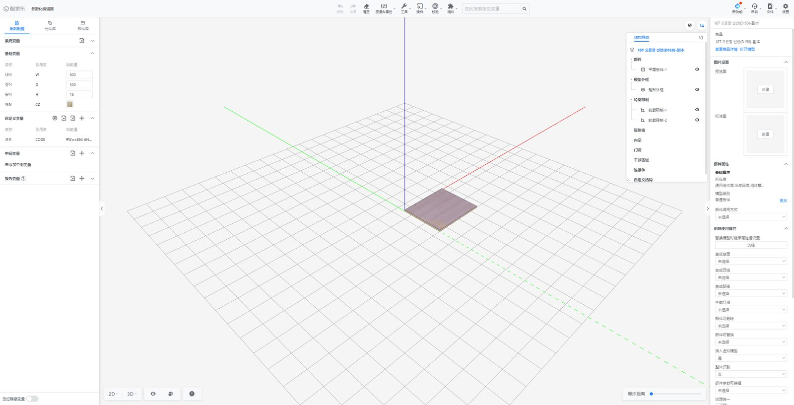
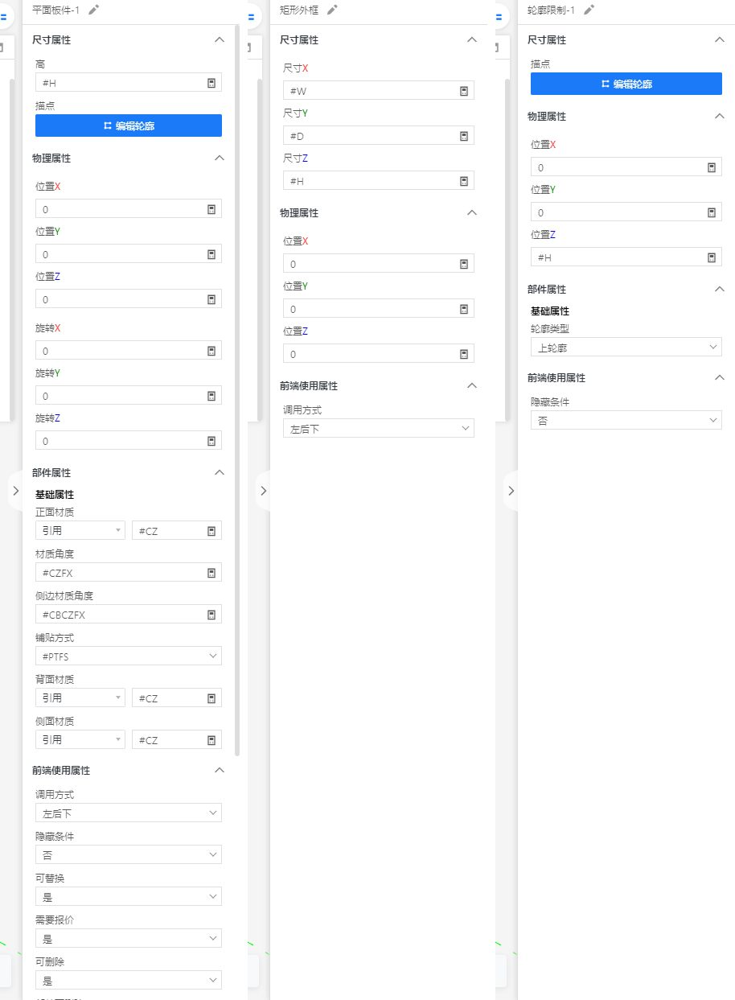
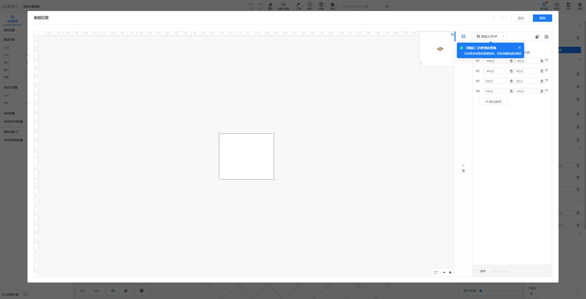
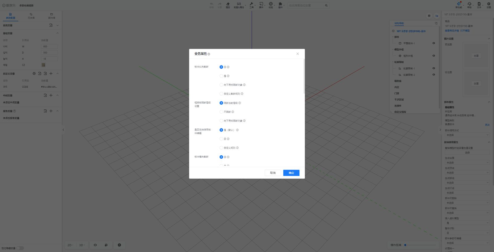
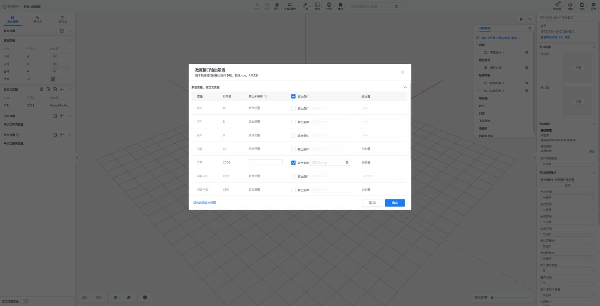
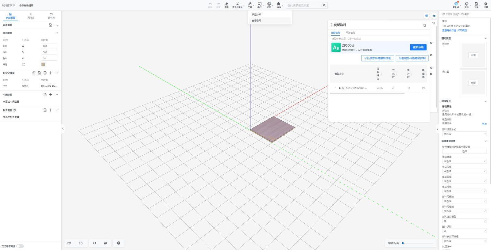
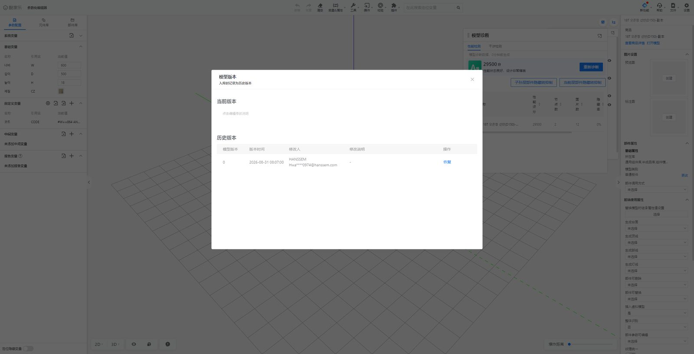
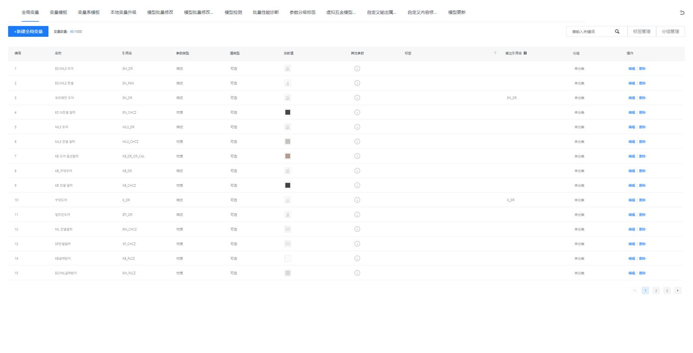

쿠지알러 파라메트릭 모델 에디터 명세
HP3 어드민의 파라메트릭 에디터를 새로 만들 때 따를 기준입니다. 표는 쿠지알러 정의 데이터에서 그대로 만들었고, 화면 구성은 기존 모델을 열어 보기만 하고 확인했습니다. 확인하지 못한 동작은 ‘미확인’으로 남겼습니다.
| 대상 | 쿠지알러 参数化模型编辑器 (/vc/modeleditor/new?tooltype=cabinet&obsbrandgoodid=…), HANSSEM 계정 |
|---|---|
| 확인 모델 | 반제품 라이브러리 ‘18T 오픈장 선반(D150)-副本’ (판재 1·윤곽 제한 2·외곽 틀) |
| 조사 | 2026-10-06 — 정의 데이터 조회(GET) + 화면 보기. 값 수정·저장·입고·확인 버튼은 누르지 않았고, 닫은 뒤 모델 버전(versionId 0)·수정 시각이 그대로인 것을 조회로 확인 |
| 근거 표기 | 데이터 정의 데이터 그대로 · 화면 화면에서 확인 · 미확인 동작을 확인하지 못함 |
1화면 구성 화면

| 영역 | 구성 |
|---|---|
| 상단 도구 막대 | 실행 취소 · 다시 실행 · 비우기 | 변수&속성 ▾ · 도구 ▾ · 조작 ▾ · 검증 ▾ · 플러그인 ▾ | ‘여기서 변수 위치 검색’ | 새 기능 ▾ · 도움말 ▾ · 파일 ▾ · 설정 |
| 왼쪽 패널 (탭 3) | 파라미터 설정 · 요소 라이브러리 · 부품 라이브러리 (왼쪽 패널 접기 = ~) |
| 가운데 3D | 격자 바닥 + XYZ 축, 아래 도구: 2D ▾ · 3D ▾ · 숨김 보기(눈) · 보조 구조 · 진단(!) · 분해 거리 막대. 오른쪽 위 토글: 모델 진단 패널 · 구조 탐색 패널 |
| 구조 탐색 (떠 있는 패널) | 모델 이름 아래 묶음: 부품 · 모델 외곽 틀 · 윤곽 제한 · 흡착선 · 내부 공간 · 문 개구부 · 간섭 영역 · 연결 부품 · 사용자 정의 구조. 항목마다 눈 아이콘(보기 숨김). 누르면 선택 |
| 오른쪽 속성 패널 | 선택 없음 = 모델 속성(3절), 요소·보조 구조 선택 = 그 정의의 속성(5절). 모든 값 칸은 수식 입력(계산기 아이콘), 재질은 ‘참조’ + 변수(#CZ) |
3모델 속성 (선택 없음) 화면
| 묶음 | 항목 |
|---|---|
| 상품 | 상품 이름 · 상품 상세 보기 · 모델 열기 |
| 이미지 설정 | 미리보기 이미지 [만들기] · 표기도 [만들기] |
| 부품 속성 › 기본 속성 | 소속 라이브러리 (여러 개 — 예: 일반 부품·반제품·부품 모드·내부 부품) · 모델 유형 [변경] · 부품 호출 방식 |
| 프론트 사용 속성 | 모델 교체 시 상속 속성 [선택] · 상판 생성 · 상부 몰딩 생성 · 걸레받이 생성 · 조명 몰딩 생성 · 부품 삭제 가능 · 부품 교체 가능 · 가상 모델 삽입 · 전체 인식 · 부품 변수 편집 가능 · 텍스처 통일 · 미닫이문 생성 · 내부 간섭 무시 · 숨김 변수 전달 · 시스템 변수 로직 · 수정 가능 변수 [선택] · 간섭 검사 영역 · 교체 가능 · 부품 내부 공간 맞춤 로직 |
| 도구 설정 | 미확인 (패널 아래쪽) |
4파라미터 설정 (왼쪽 1번 탭) 화면
- 시스템 변수 (접힘) · 기본 변수 표: 이름 · 참조명 · 현재값 — 예: 너비 W 600 · 깊이 D 500 · 높이 H 18 · 재질 CZ(재질 견본)
- 사용자 정의 변수 (아이콘: 숨김 보기 · 가져오기 · 내보내기 · 추가) — 예: 코드
CODE=#W==864 AND #CZ.productcode=="K_IU001353" ? "TSD000679" : …→ 재질 변수의 상품 속성(#CZ.productcode)으로 상품코드를 고르는 수식 - 중간 변수 · 보고 변수(가져오기·추가) · 아래 ‘숨김 변수 위치 표시’ 스위치
- 상단 ‘여기서 변수 위치 검색’ 으로 변수를 찾아 이동
요소 라이브러리·부품 라이브러리 탭의 도구 종류별 구성은 분석 문서 3-2절에 정리했습니다.
5요소 · 보조 구조 속성 데이터
주방·욕실(cabinet) 정의 30종. 오른쪽 패널은 이 정의를 ‘패널 묶음’ 순서로 보여 줍니다(크기 → 물리 → 부품(기본) → 프론트 사용). 화면 예: 판재·외곽 틀·윤곽 제한.

평면 판재 平面板件 PrimitiveModel.plank · 파라메트릭 모델 요소
| 속성 | 참조명 | 값 형식 | 패널 묶음 | 선택지 |
|---|---|---|---|---|
| 높이 高 | thickness | 실수 | 크기 속성 | |
| 윤곽점 描点 | plankPath | 판 윤곽 경로 | 크기 속성 | |
| 앞면 재질 正面材质 | materialBrandGoodId | 재질 | 부품(기본) 속성 | |
| 재질 각도 材质角度 | textureAngleDegree | 실수 | 부품(기본) 속성 | |
| 옆면 재질 각도 侧边材质角度 | sectionTextureAngleDegree | 실수 | 부품(기본) 속성 | |
| 붙임 방식 铺贴方式 | texturePavingStyle | 정수/선택 | 부품(기본) 속성 | 평붙임 / 늘림 |
| 뒷면 재질 背面材质 | bottomFaceMaterial | 재질 | 부품(기본) 속성 | |
| 옆면 재질 侧面材质 | sectionFaceMaterial | 재질 | 부품(기본) 속성 | |
| 위치 位置 | position | 3D 좌표 | 물리 속성 | |
| 회전 旋转 | rotationDegree | 3D 좌표 | 물리 속성 | |
| 호출 방식 调用方式 | invokedPosType | 정수/선택 | 프론트 사용 속성 | 원점 / 좌후하 / 사용자 기준점 |
| 숨김 조건 隐藏条件 | ignore | 예·아니오(조건식) | 프론트 사용 속성 | |
| 교체 가능 可替换 | replaceable | 예·아니오(조건식) | 프론트 사용 속성 | |
| 견적 필요 需要报价 | needQuotation | 예·아니오(조건식) | 프론트 사용 속성 | |
| 삭제 가능 可删除 | isDeletable | 예·아니오(조건식) | 프론트 사용 속성 | |
| 부품 삭제 가능 部件可删除 | cascadeDelete | 예·아니오(조건식) | 프론트 사용 속성 | |
| 스타일 패키지 样式包 | modelPackage | 스타일 패키지 | 프론트 사용 속성 | |
| 목록 출력 清单输出 | displayInCostList | 예·아니오(조건식) | 프론트 사용 속성 | |
| 변수 편집 가능 参数可编辑 | paramOverride | 예·아니오(조건식) | 프론트 사용 속성 | |
| 내부 간섭 무시 忽略内部干涉 | ignoreInnerIntersect | 예·아니오(조건식) | 프론트 사용 속성 | |
| 불리언의 판재 윤곽 계산 참여 布尔是否参与板件轮廓计算 | needHandleBoolEffect | 예·아니오(조건식) | 프론트 사용 속성 | |
| 억제 해제 시 부품 초기화 解除抑制后重置部件 | resetWhenSuppress | 예·아니오(조건식) | 프론트 사용 속성 | |
| 억제 조건 抑制条件 | KJL_model_suppress_param | 예·아니오(조건식) | 프론트 사용 속성 |
로프트 放样 PrimitiveModel.lofting · 파라메트릭 모델 요소
| 속성 | 참조명 | 값 형식 | 패널 묶음 | 선택지 |
|---|---|---|---|---|
| 단면 轮廓 | profileData | 단면 형상 | 부품(기본) 속성 | |
| 로프트 경로 放样路径 | loftPath | 스윕 경로 | 부품(기본) 속성 | |
| 로프트 각도 放样角度 | planeRotate | 실수 | 부품(기본) 속성 | |
| 재질 材质 | materialBrandGoodId | 재질 | 부품(기본) 속성 | |
| 절단 높이 截断高度 | height | 실수 | 부품(기본) 속성 | |
| 재질 각도 材质角度 | textureAngleDegree | 실수 | 부품(기본) 속성 | |
| 단면 높이 轮廓高度 | profileScaleHeight | 실수 | 부품(기본) 속성 | |
| 단면 폭 轮廓宽度 | profileScaleWidth | 실수 | 부품(기본) 속성 | |
| 위치 位置 | position | 3D 좌표 | 물리 속성 | |
| 회전 旋转 | rotationDegree | 3D 좌표 | 물리 속성 | |
| 호출 방식 调用方式 | invokedPosType | 정수/선택 | 프론트 사용 속성 | 원점 / 좌후하 / 사용자 기준점 |
| 숨김 조건 隐藏条件 | ignore | 예·아니오(조건식) | 프론트 사용 속성 | |
| 교체 가능 可替换 | replaceable | 예·아니오(조건식) | 프론트 사용 속성 | |
| 견적 필요 需要报价 | needQuotation | 예·아니오(조건식) | 프론트 사용 속성 | |
| 삭제 가능 可删除 | isDeletable | 예·아니오(조건식) | 프론트 사용 속성 | |
| 부품 삭제 가능 部件可删除 | cascadeDelete | 예·아니오(조건식) | 프론트 사용 속성 | |
| 스타일 패키지 样式包 | modelPackage | 스타일 패키지 | 프론트 사용 속성 | |
| 목록 출력 清单输出 | displayInCostList | 예·아니오(조건식) | 프론트 사용 속성 | |
| 변수 편집 가능 参数可编辑 | paramOverride | 예·아니오(조건식) | 프론트 사용 속성 | |
| 내부 간섭 무시 忽略内部干涉 | ignoreInnerIntersect | 예·아니오(조건식) | 프론트 사용 속성 | |
| 불리언의 판재 윤곽 계산 참여 布尔是否参与板件轮廓计算 | needHandleBoolEffect | 예·아니오(조건식) | 프론트 사용 속성 | |
| 억제 해제 시 부품 초기화 解除抑制后重置部件 | resetWhenSuppress | 예·아니오(조건식) | 프론트 사용 속성 | |
| 억제 조건 抑制条件 | KJL_model_suppress_param | 예·아니오(조건식) | 프론트 사용 속성 |
스윕 扫掠 PrimitiveModel.brepSweep · 파라메트릭 모델 요소
| 속성 | 참조명 | 값 형식 | 패널 묶음 | 선택지 |
|---|---|---|---|---|
| 단면 轮廓 | profileData | 단면 형상 | 부품(기본) 속성 | |
| 절단 높이 截断高度 | height | 실수 | 부품(기본) 속성 | |
| 스윕 경로 扫掠路径 | loftPath | 스윕 경로 | 부품(기본) 속성 | |
| 재질 각도 材质角度 | textureAngleDegree | 실수 | 부품(기본) 속성 | |
| 재질 材质 | materialBrandGoodId | 재질 | 부품(기본) 속성 | |
| 스윕 각도 扫掠角度 | planeRotate | 실수 | 부품(기본) 속성 | |
| 단면 높이 轮廓高度 | profileScaleHeight | 실수 | 부품(기본) 속성 | |
| 단면 폭 轮廓宽度 | profileScaleWidth | 실수 | 부품(기본) 속성 | |
| 위치 位置 | position | 3D 좌표 | 물리 속성 | |
| 회전 旋转 | rotationDegree | 3D 좌표 | 물리 속성 | |
| 호출 방식 调用方式 | invokedPosType | 정수/선택 | 프론트 사용 속성 | 원점 / 좌후하 / 사용자 기준점 |
| 숨김 조건 隐藏条件 | ignore | 예·아니오(조건식) | 프론트 사용 속성 | |
| 교체 가능 可替换 | replaceable | 예·아니오(조건식) | 프론트 사용 속성 | |
| 견적 필요 需要报价 | needQuotation | 예·아니오(조건식) | 프론트 사용 속성 | |
| 삭제 가능 可删除 | isDeletable | 예·아니오(조건식) | 프론트 사용 속성 | |
| 부품 삭제 가능 部件可删除 | cascadeDelete | 예·아니오(조건식) | 프론트 사용 속성 | |
| 스타일 패키지 样式包 | modelPackage | 스타일 패키지 | 프론트 사용 속성 | |
| 목록 출력 清单输出 | displayInCostList | 예·아니오(조건식) | 프론트 사용 속성 | |
| 변수 편집 가능 参数可编辑 | paramOverride | 예·아니오(조건식) | 프론트 사용 속성 | |
| 내부 간섭 무시 忽略内部干涉 | ignoreInnerIntersect | 예·아니오(조건식) | 프론트 사용 속성 | |
| 불리언의 판재 윤곽 계산 참여 布尔是否参与板件轮廓计算 | needHandleBoolEffect | 예·아니오(조건식) | 프론트 사용 속성 | |
| 억제 해제 시 부품 초기화 解除抑制后重置部件 | resetWhenSuppress | 예·아니오(조건식) | 프론트 사용 속성 | |
| 억제 조건 抑制条件 | KJL_model_suppress_param | 예·아니오(조건식) | 프론트 사용 속성 |
경사 절단 스윕 斜切扫掠 PrimitiveModel.brepSweepExtend · 파라메트릭 모델 요소
| 속성 | 참조명 | 값 형식 | 패널 묶음 | 선택지 |
|---|---|---|---|---|
| 스윕 경로 扫掠路径 | loftPath | 스윕 경로 | 부품(기본) 속성 | |
| 재질 材质 | materialBrandGoodId | 재질 | 부품(기본) 속성 | |
| 재질 각도 材质角度 | textureAngleDegree | 실수 | 부품(기본) 속성 | |
| 단면 轮廓 | profileData | 단면 형상 | 부품(기본) 속성 | |
| 시작면 경사 절단 방식 起始面斜切模式 | startRotateAxis | 정수/선택 | 부품(기본) 속성 | 왼쪽 기준변 / 오른쪽 기준변 / 위 기준변 / 아래 기준변 |
| 시작면 경사 절단 각도 起始面斜切角度 | startRotate | 실수 | 부품(기본) 속성 | |
| 끝면 경사 절단 방식 终止面斜切模式 | endRotateAxis | 정수/선택 | 부품(기본) 속성 | 왼쪽 기준변 / 오른쪽 기준변 / 위 기준변 / 아래 기준변 |
| 끝면 경사 절단 각도 终止面斜切角度 | endRotate | 실수 | 부품(기본) 속성 | |
| 절단 높이 截断高度 | height | 실수 | 부품(기본) 속성 | |
| 단면 높이 轮廓高度 | profileScaleHeight | 실수 | 부품(기본) 속성 | |
| 단면 폭 轮廓宽度 | profileScaleWidth | 실수 | 부품(기본) 속성 | |
| 위치 位置 | position | 3D 좌표 | 물리 속성 | |
| 회전 旋转 | rotationDegree | 3D 좌표 | 물리 속성 | |
| 호출 방식 调用方式 | invokedPosType | 정수/선택 | 프론트 사용 속성 | 원점 / 좌후하 / 사용자 기준점 |
| 숨김 조건 隐藏条件 | ignore | 예·아니오(조건식) | 프론트 사용 속성 | |
| 교체 가능 可替换 | replaceable | 예·아니오(조건식) | 프론트 사용 속성 | |
| 견적 필요 需要报价 | needQuotation | 예·아니오(조건식) | 프론트 사용 속성 | |
| 삭제 가능 可删除 | isDeletable | 예·아니오(조건식) | 프론트 사용 속성 | |
| 부품 삭제 가능 部件可删除 | cascadeDelete | 예·아니오(조건식) | 프론트 사용 속성 | |
| 스타일 패키지 样式包 | modelPackage | 스타일 패키지 | 프론트 사용 속성 | |
| 목록 출력 清单输出 | displayInCostList | 예·아니오(조건식) | 프론트 사용 속성 | |
| 변수 편집 가능 参数可编辑 | paramOverride | 예·아니오(조건식) | 프론트 사용 속성 | |
| 내부 간섭 무시 忽略内部干涉 | ignoreInnerIntersect | 예·아니오(조건식) | 프론트 사용 속성 | |
| 불리언의 판재 윤곽 계산 참여 布尔是否参与板件轮廓计算 | needHandleBoolEffect | 예·아니오(조건식) | 프론트 사용 속성 | |
| 억제 해제 시 부품 초기화 解除抑制后重置部件 | resetWhenSuppress | 예·아니오(조건식) | 프론트 사용 속성 | |
| 억제 조건 抑制条件 | KJL_model_suppress_param | 예·아니오(조건식) | 프론트 사용 속성 |
격자 网格 PrimitiveModel.grid · 파라메트릭 모델 요소
| 속성 | 참조명 | 값 형식 | 패널 묶음 | 선택지 |
|---|---|---|---|---|
| 폭 宽 | length | 실수 | 크기 속성 | |
| 깊이 深 | width | 실수 | 크기 속성 | |
| 높이 高 | thickness | 실수 | 크기 속성 | |
| 판 두께 板厚 | plankThickness | 실수 | 크기 속성 | |
| 재질 材质 | materialBrandGoodId | 재질 | 부품(기본) 속성 | |
| 격자 간격 网格长度 | gridLength | 실수 | 부품(기본) 속성 | |
| 옆면 재질 각도 侧边材质角度 | sectionTextureAngleDegree | 실수 | 부품(기본) 속성 | |
| 재질 각도 材质角度 | textureAngleDegree | 실수 | 부품(기본) 속성 | |
| 붙임 방식 铺贴方式 | texturePavingStyle | 정수/선택 | 부품(기본) 속성 | 평붙임 / 늘림 |
| 위치 位置 | position | 3D 좌표 | 물리 속성 | |
| 회전 旋转 | rotationDegree | 3D 좌표 | 물리 속성 | |
| 호출 방식 调用方式 | invokedPosType | 정수/선택 | 프론트 사용 속성 | 원점 / 좌후하 / 사용자 기준점 |
| 숨김 조건 隐藏条件 | ignore | 예·아니오(조건식) | 프론트 사용 속성 | |
| 교체 가능 可替换 | replaceable | 예·아니오(조건식) | 프론트 사용 속성 | |
| 견적 필요 需要报价 | needQuotation | 예·아니오(조건식) | 프론트 사용 속성 | |
| 삭제 가능 可删除 | isDeletable | 예·아니오(조건식) | 프론트 사용 속성 | |
| 부품 삭제 가능 部件可删除 | cascadeDelete | 예·아니오(조건식) | 프론트 사용 속성 | |
| 스타일 패키지 样式包 | modelPackage | 스타일 패키지 | 프론트 사용 속성 | |
| 목록 출력 清单输出 | displayInCostList | 예·아니오(조건식) | 프론트 사용 속성 | |
| 변수 편집 가능 参数可编辑 | paramOverride | 예·아니오(조건식) | 프론트 사용 속성 | |
| 내부 간섭 무시 忽略内部干涉 | ignoreInnerIntersect | 예·아니오(조건식) | 프론트 사용 속성 | |
| 불리언의 판재 윤곽 계산 참여 布尔是否参与板件轮廓计算 | needHandleBoolEffect | 예·아니오(조건식) | 프론트 사용 속성 | |
| 억제 해제 시 부품 초기화 解除抑制后重置部件 | resetWhenSuppress | 예·아니오(조건식) | 프론트 사용 속성 | |
| 억제 조건 抑制条件 | KJL_model_suppress_param | 예·아니오(조건식) | 프론트 사용 속성 |
모서리형 판재 边型板件 PrimitiveModel.sideStylePlank · 파라메트릭 모델 요소
| 속성 | 참조명 | 값 형식 | 패널 묶음 | 선택지 |
|---|---|---|---|---|
| 높이 高 | thickness | 실수 | 크기 속성 | |
| 윤곽점 描点 | plankPath | 판 윤곽 경로 | 크기 속성 | |
| 앞면 재질 正面材质 | materialBrandGoodId | 재질 | 부품(기본) 속성 | |
| 뒷면 재질 背面材质 | bottomFaceMaterial | 재질 | 부품(기본) 속성 | |
| 앞·뒷면 재질 각도 正面背面材质角度 | textureAngleDegree | 실수 | 부품(기본) 속성 | |
| 앞·뒷면 붙임 방식 正面背面铺贴方式 | texturePavingStyle | 정수/선택 | 부품(기본) 속성 | 평붙임 / 늘림 |
| 옆면 재질 侧面材质 | sectionFaceMaterial | 재질 | 부품(기본) 속성 | |
| 옆면 재질 각도 侧面材质角度 | sectionTextureAngleDegree | 실수 | 부품(기본) 속성 | |
| 모따기면 재질 倒角面材质 | chamferMaterial | 재질 | 부품(기본) 속성 | |
| 모따기면 재질 각도 倒角面材质角度 | chamferTextureAngleDegree | 실수 | 부품(기본) 속성 | |
| 위치 位置 | position | 3D 좌표 | 물리 속성 | |
| 회전 旋转 | rotationDegree | 3D 좌표 | 물리 속성 | |
| 호출 방식 调用方式 | invokedPosType | 정수/선택 | 프론트 사용 속성 | 원점 / 좌후하 / 사용자 기준점 |
| 숨김 조건 隐藏条件 | ignore | 예·아니오(조건식) | 프론트 사용 속성 | |
| 교체 가능 可替换 | replaceable | 예·아니오(조건식) | 프론트 사용 속성 | |
| 견적 필요 需要报价 | needQuotation | 예·아니오(조건식) | 프론트 사용 속성 | |
| 삭제 가능 可删除 | isDeletable | 예·아니오(조건식) | 프론트 사용 속성 | |
| 부품 삭제 가능 部件可删除 | cascadeDelete | 예·아니오(조건식) | 프론트 사용 속성 | |
| 스타일 패키지 样式包 | modelPackage | 스타일 패키지 | 프론트 사용 속성 | |
| 목록 출력 清单输出 | displayInCostList | 예·아니오(조건식) | 프론트 사용 속성 | |
| 변수 편집 가능 参数可编辑 | paramOverride | 예·아니오(조건식) | 프론트 사용 속성 | |
| 내부 간섭 무시 忽略内部干涉 | ignoreInnerIntersect | 예·아니오(조건식) | 프론트 사용 속성 | |
| 불리언의 판재 윤곽 계산 참여 布尔是否参与板件轮廓计算 | needHandleBoolEffect | 예·아니오(조건식) | 프론트 사용 속성 | |
| 억제 해제 시 부품 초기화 解除抑制后重置部件 | resetWhenSuppress | 예·아니오(조건식) | 프론트 사용 속성 | |
| 억제 조건 抑制条件 | KJL_model_suppress_param | 예·아니오(조건식) | 프론트 사용 속성 |
윤곽 제한 轮廓限制 LinellaeInstance.exLinellaeInstance · 윤곽 제한
| 속성 | 참조명 | 값 형식 | 패널 묶음 | 선택지 |
|---|---|---|---|---|
| 윤곽점 描点 | profile | 윤곽 | 크기 속성 | |
| 윤곽 유형 轮廓类型 | lineType | 문자 | 부품(기본) 속성 | 위 윤곽 / 아래 윤곽 / 상판 위 볼 윤곽 / 상판 중간 볼 윤곽 / 상판 아래 볼 윤곽 / 반매립 볼 윤곽 / 투영 윤곽 |
| 위치 位置 | position | 3D 좌표 | 물리 속성 | |
| 숨김 조건 隐藏条件 | ignore | 예·아니오(조건식) | 프론트 사용 속성 | |
| 뒤 구멍 거리 설정 孔距后配置 | holeBehindDistanceConfig | 범위 있는 실수 | 프론트 사용 속성 | |
| 앞 구멍 거리 설정 孔距前配置 | holeFrontDistanceConfig | 범위 있는 실수 | 프론트 사용 속성 | |
| 왼쪽 구멍 거리 설정 孔距左配置 | holeLeftDistanceConfig | 범위 있는 실수 | 프론트 사용 속성 | |
| 오른쪽 구멍 거리 설정 孔距右配置 | holeRightDistanceConfig | 범위 있는 실수 | 프론트 사용 속성 |
내부 공간 内空 FrameInstance.positionCenterBoxInnerFrameInstance · 내부 공간
| 속성 | 참조명 | 값 형식 | 패널 묶음 | 선택지 |
|---|---|---|---|---|
| 크기 尺寸 | size | 3D 좌표 | 크기 속성 | |
| 위치 位置 | center | 3D 좌표 | 물리 속성 | |
| 호출 방식 调用方式 | invokedPosType | 정수/선택 | 프론트 사용 속성 | 원점 / 좌후하 |
| 숨김 조건 隐藏条件 | ignore | 예·아니오(조건식) | 프론트 사용 속성 | |
| 열림 방향 朝向 | openDirection | 열림 방향 | 프론트 사용 속성 | |
| 부품 맞춤 제한 组件适配限制 | adaptationRestrictions | 스타일 패키지 | 프론트 사용 속성 | |
| 맞춤 경계 适配边界 | adaptationBoundaryType | 정수/선택 | 프론트 사용 속성 | 설계 툴 우선 / 내부 공간 우선 |
문 개구부 门洞 LinellaeInstance.cabinetWardrobeDoorHole · 문 개구부
| 속성 | 참조명 | 값 형식 | 패널 묶음 | 선택지 |
|---|---|---|---|---|
| 폭 宽度 | width | 실수 | 크기 속성 | |
| 높이 高度 | height | 실수 | 크기 속성 | |
| 위치 位置 | position | 3D 좌표 | 물리 속성 | |
| 회전 旋转 | rotationDegree | 3D 좌표 | 물리 속성 | |
| 숨김 조건 隐藏条件 | ignore | 예·아니오(조건식) | 프론트 사용 속성 | |
| 호출 방식 调用方式 | invokedPosType | 정수/선택 | 프론트 사용 속성 | 원점 / 좌후하 |
| 개구부 유형 门洞类型 | calculateType | 문자 | 프론트 사용 속성 | 값 유형 / 수식 유형 / 일반 유형 |
| 최소 맞춤 단위 最小适配单元 | adaptationUnit | 예·아니오(조건식) | 프론트 사용 속성 |
간섭 영역 干涉区域 Intersect.intersectBox · 간섭 영역
| 속성 | 참조명 | 값 형식 | 패널 묶음 | 선택지 |
|---|---|---|---|---|
| 크기 尺寸 | size | 3D 좌표 | 크기 속성 | |
| 위치 位置 | center | 3D 좌표 | 물리 속성 | |
| 호출 방식 调用方式 | invokedPosType | 정수/선택 | 프론트 사용 속성 | 원점 / 좌후하 |
| 간섭 유형 干涉类型 | intersectType | 문자 | 프론트 사용 속성 | 정적 간섭 / 동적 간섭 |
| 숨김 조건 隐藏条件 | ignore | 예·아니오(조건식) | 프론트 사용 속성 |
직선 흡착선 直线吸附线 AdsorbLine.adsorbLine · 흡착선
| 속성 | 참조명 | 값 형식 | 패널 묶음 | 선택지 |
|---|---|---|---|---|
| 방향 方向 | direction | 문자 | 부품(기본) 속성 | 양방향 흡착 / 왼쪽 흡착 / 오른쪽 흡착 |
| 시작점 起始点 | start | 2D 좌표 | 물리 속성 | |
| 끝점 终止点 | end | 2D 좌표 | 물리 속성 | |
| 숨김 조건 隐藏条件 | ignore | 예·아니오(조건식) | 프론트 사용 속성 |
직각 흡착선 直角吸附线 AdsorbLine.rightAdsorbLine · 흡착선
| 속성 | 참조명 | 값 형식 | 패널 묶음 | 선택지 |
|---|---|---|---|---|
| 직각점 直角点 | start | 2D 좌표 | 물리 속성 | |
| 흡착선 X 방향 吸附线X方向 | directionX | 양/음 방향 | 물리 속성 | |
| 흡착선 X 길이 吸附线X长度 | paramX | 숫자 변수명 | 물리 속성 | |
| 흡착선 Y 방향 吸附线Y方向 | directionY | 양/음 방향 | 물리 속성 | |
| 흡착선 Y 길이 吸附线Y长度 | paramY | 숫자 변수명 | 물리 속성 | |
| 숨김 조건 隐藏条件 | ignore | 예·아니오(조건식) | 프론트 사용 속성 |
연결점 连接点 Connector.connectPoint · 연결
| 속성 | 참조명 | 값 형식 | 패널 묶음 | 선택지 |
|---|---|---|---|---|
| 위치 位置 | position | 3D 좌표 | 물리 속성 | |
| 회전 旋转 | rotateDegree | 3D 좌표 | 물리 속성 | |
| 숨김 조건 隐藏条件 | ignore | 예·아니오(조건식) | 프론트 사용 속성 | |
| 수신 규약 接收协议 | snapTokenSet | 연결 규약 집합 | 프론트 사용 속성 | |
| 송신 규약 发送协议 | attachTokenSet | 연결 규약 집합 | 프론트 사용 속성 | |
| 참조명 引用名 | refName | 문자 | 프론트 사용 속성 | |
| 회전 순서 旋转顺序 | rotateOrder | 문자 | 프론트 사용 속성 | XYZ / ZYX |
연결선 连接线 Connector.connectLine · 연결
| 속성 | 참조명 | 값 형식 | 패널 묶음 | 선택지 |
|---|---|---|---|---|
| 위치 位置 | position | 3D 좌표 | 물리 속성 | |
| 회전 旋转 | rotateDegree | 3D 좌표 | 물리 속성 | |
| 숨김 조건 隐藏条件 | ignore | 예·아니오(조건식) | 프론트 사용 속성 | |
| 길이 长度 | length | 연결선 길이 | 프론트 사용 속성 | |
| 수신 규약 接收协议 | snapTokenSet | 연결 규약 집합 | 프론트 사용 속성 | |
| 송신 규약 发送协议 | attachTokenSet | 연결 규약 집합 | 프론트 사용 속성 | |
| 참조명 引用名 | refName | 문자 | 프론트 사용 속성 | |
| 이어 그리기 설정 串线配置 | joinRule | 정수/선택 | 프론트 사용 속성 | 이어 그리기 불가 / 이어 그리기(같은 방향) / 이어 그리기(방향 무관) |
| 회전 순서 旋转顺序 | rotateOrder | 문자 | 프론트 사용 속성 | XYZ / ZYX |
연결면 连接面 Connector.connectFace · 연결
| 속성 | 참조명 | 값 형식 | 패널 묶음 | 선택지 |
|---|---|---|---|---|
| 위치 位置 | position | 3D 좌표 | 물리 속성 | |
| 회전 旋转 | rotateDegree | 3D 좌표 | 물리 속성 | |
| 숨김 조건 隐藏条件 | ignore | 예·아니오(조건식) | 프론트 사용 속성 | |
| 경로 路径 | connectFacePath | 연결면 경로 | 프론트 사용 속성 | |
| 수신 규약 接收协议 | snapTokenSet | 연결 규약 집합 | 프론트 사용 속성 | |
| 송신 규약 发送协议 | attachTokenSet | 연결 규약 집합 | 프론트 사용 속성 | |
| 참조명 引用名 | refName | 문자 | 프론트 사용 속성 | |
| 회전 순서 旋转顺序 | rotateOrder | 문자 | 프론트 사용 속성 | XYZ / ZYX |
연결호 连接弧 Connector.connectArc · 연결
| 속성 | 참조명 | 값 형식 | 패널 묶음 | 선택지 |
|---|---|---|---|---|
| 위치 位置 | position | 3D 좌표 | 물리 속성 | |
| 회전 旋转 | rotateDegree | 3D 좌표 | 물리 속성 | |
| 숨김 조건 隐藏条件 | ignore | 예·아니오(조건식) | 프론트 사용 속성 | |
| 수신 규약 接收协议 | snapTokenSet | 연결 규약 집합 | 프론트 사용 속성 | |
| 송신 규약 发送协议 | attachTokenSet | 연결 규약 집합 | 프론트 사용 속성 | |
| 참조명 引用名 | refName | 문자 | 프론트 사용 속성 | |
| 끝점 终点 | endPoint | 2D 좌표 | 프론트 사용 속성 | |
| 반지름 半径 | radius | 실수 | 프론트 사용 속성 | |
| 시계 방향 顺时针 | clockWise | 예·아니오(조건식) | 프론트 사용 속성 | |
| 짧은 호 劣弧 | minorArc | 예·아니오(조건식) | 프론트 사용 속성 | |
| 회전 순서 旋转顺序 | rotateOrder | 문자 | 프론트 사용 속성 | XYZ / ZYX |
배선 走线 WireLayout.wireLayout · 배선
| 속성 | 참조명 | 값 형식 | 패널 묶음 | 선택지 |
|---|---|---|---|---|
| 위치 位置 | position | 3D 좌표 | 물리 속성 | |
| 회전 旋转 | rotateDegree | 3D 좌표 | 물리 속성 | |
| 길이 长度 | length | 배선 길이 | 프론트 사용 속성 |
배관 연결구 管道连接件 ConnectorModel.pipeConnector · 연결 부품
| 속성 | 참조명 | 값 형식 | 패널 묶음 | 선택지 |
|---|---|---|---|---|
| 위치 位置 | position | 3D 좌표 | 물리 속성 | |
| 회전 旋转 | rotateDegree | 3D 좌표 | 물리 속성 | |
| 호출 방식 调用方式 | invokedPosType | 정수/선택 | 프론트 사용 속성 | 원점 / 좌후하 |
| 규격 规格 | specification | 정수/선택 | 프론트 사용 속성 | DN15 / DN20 / DN25 / DN32 / DN40 |
| 유형 类型 | type | 정수/선택 | 프론트 사용 속성 | 냉수관 / 온수관 |
설치구 安装口 ConnectorModel.hole · 연결 부품
| 속성 | 참조명 | 값 형식 | 패널 묶음 | 선택지 |
|---|---|---|---|---|
| 설치구 유형 安装口类型 | holeType | 정수/선택 | 부품(기본) 속성 | 수전 구멍 / 보조 설비 구멍 / 배수구 |
| 위치 位置 | position | 3D 좌표 | 물리 속성 | |
| 회전 旋转 | rotateDegree | 3D 좌표 | 물리 속성 | |
| 호출 방식 调用方式 | invokedPosType | 정수/선택 | 프론트 사용 속성 | 원점 / 좌후하 |
| 규격 规格 | specification | 규격 | 프론트 사용 속성 | |
| 상판 두께 인식 是否识别台面厚度 | includeCountertopHeight | 예·아니오(조건식) | 프론트 사용 속성 | |
| 수전 구멍 뒤 거리 龙头孔距后值 | faucetHoleBehindDistanceConfig | 범위 있는 실수 | 프론트 사용 속성 |
설치 위치 安装位 ConnectorModel.auxMount · 연결 부품
| 속성 | 참조명 | 값 형식 | 패널 묶음 | 선택지 |
|---|---|---|---|---|
| 설치 위치 유형 安装位类型 | mountType | 정수/선택 | 부품(기본) 속성 | 수전 설치 위치 / 보조 설비 설치 위치 / 배수기 설치 위치 / 다리 설치 위치 / 다공 수전 주 설치 위치(하나) |
| 위치 位置 | position | 3D 좌표 | 물리 속성 | |
| 회전 旋转 | rotateDegree | 3D 좌표 | 물리 속성 | |
| 호출 방식 调用方式 | invokedPosType | 정수/선택 | 프론트 사용 속성 | 원점 / 좌후하 |
| 규격 规格 | specification | 규격 | 프론트 사용 속성 |
공정-구멍 工艺-孔 Auxiliary.auxiliaryPoint · 공정·도면 보조 구조
| 속성 | 참조명 | 값 형식 | 패널 묶음 | 선택지 |
|---|---|---|---|---|
| 위치 位置 | position | 3D 좌표 | 물리 속성 | |
| 회전 旋转 | rotateDegree | 3D 좌표 | 물리 속성 | |
| 숨김 조건 隐藏条件 | ignore | 예·아니오(조건식) | 프론트 사용 속성 | |
| 사용자 정의 업무 변수 自定义业务参数 | businessParam | 업무 변수 | 프론트 사용 속성 |
도면 표기 보조선 图纸标注辅助线 Auxiliary.auxiliaryLine · 공정·도면 보조 구조
| 속성 | 참조명 | 값 형식 | 패널 묶음 | 선택지 |
|---|---|---|---|---|
| 경로 路径 | auxiliaryLinePath | 보조선 경로 | 부품(기본) 속성 | |
| 위치 位置 | position | 3D 좌표 | 물리 속성 | |
| 회전 旋转 | rotateDegree | 3D 좌표 | 물리 속성 | |
| 숨김 조건 隐藏条件 | ignore | 예·아니오(조건식) | 프론트 사용 속성 | |
| 사용자 정의 업무 변수 自定义业务参数 | businessParam | 업무 변수 | 프론트 사용 속성 |
공정-사각 홈 工艺-方槽 Auxiliary.auxiliaryLine · 공정·도면 보조 구조
| 속성 | 참조명 | 값 형식 | 패널 묶음 | 선택지 |
|---|---|---|---|---|
| 경로 路径 | auxiliaryLinePath | 보조선 경로 | 부품(기본) 속성 | |
| 위치 位置 | position | 3D 좌표 | 물리 속성 | |
| 회전 旋转 | rotateDegree | 3D 좌표 | 물리 속성 | |
| 숨김 조건 隐藏条件 | ignore | 예·아니오(조건식) | 프론트 사용 속성 | |
| 사용자 정의 업무 변수 自定义业务参数 | businessParam | 업무 변수 | 프론트 사용 속성 |
공정-경로 홈 工艺-路径槽 Auxiliary.auxiliaryLine · 공정·도면 보조 구조
| 속성 | 참조명 | 값 형식 | 패널 묶음 | 선택지 |
|---|---|---|---|---|
| 경로 路径 | auxiliaryLinePath | 보조선 경로 | 부품(기본) 속성 | |
| 위치 位置 | position | 3D 좌표 | 물리 속성 | |
| 회전 旋转 | rotateDegree | 3D 좌표 | 물리 속성 | |
| 숨김 조건 隐藏条件 | ignore | 예·아니오(조건식) | 프론트 사용 속성 | |
| 사용자 정의 업무 변수 自定义业务参数 | businessParam | 업무 변수 | 프론트 사용 속성 |
공정-둥근 사각 홈 工艺-圆角方槽 Auxiliary.auxiliaryLine · 공정·도면 보조 구조
| 속성 | 참조명 | 값 형식 | 패널 묶음 | 선택지 |
|---|---|---|---|---|
| 경로 路径 | auxiliaryLinePath | 보조선 경로 | 부품(기본) 속성 | |
| 위치 位置 | position | 3D 좌표 | 물리 속성 | |
| 회전 旋转 | rotateDegree | 3D 좌표 | 물리 속성 | |
| 숨김 조건 隐藏条件 | ignore | 예·아니오(조건식) | 프론트 사용 속성 | |
| 사용자 정의 업무 변수 自定义业务参数 | businessParam | 업무 변수 | 프론트 사용 속성 |
치수 기준선 尺寸标注参考线 Auxiliary.auxiliaryLine · 공정·도면 보조 구조
| 속성 | 참조명 | 값 형식 | 패널 묶음 | 선택지 |
|---|---|---|---|---|
| 경로 路径 | auxiliaryLinePath | 보조선 경로 | 부품(기본) 속성 | |
| 위치 位置 | position | 3D 좌표 | 물리 속성 | |
| 회전 旋转 | rotateDegree | 3D 좌표 | 물리 속성 | |
| 숨김 조건 隐藏条件 | ignore | 예·아니오(조건식) | 프론트 사용 속성 | |
| 사용자 정의 업무 변수 自定义业务参数 | businessParam | 업무 변수 | 프론트 사용 속성 |
도면 표기 보조면 图纸标注辅助面 Auxiliary.auxiliaryPlane · 공정·도면 보조 구조
| 속성 | 참조명 | 값 형식 | 패널 묶음 | 선택지 |
|---|---|---|---|---|
| 윤곽점 描点 | auxiliaryPlanePath | 보조면 경로 | 크기 속성 | |
| 위치 位置 | position | 3D 좌표 | 물리 속성 | |
| 회전 旋转 | rotateDegree | 3D 좌표 | 물리 속성 | |
| 숨김 조건 隐藏条件 | ignore | 예·아니오(조건식) | 프론트 사용 속성 | |
| 사용자 정의 업무 변수 自定义业务参数 | businessParam | 업무 변수 | 프론트 사용 속성 |
공정-이형 홈 工艺-异形槽 Auxiliary.auxiliaryPlane · 공정·도면 보조 구조
| 속성 | 참조명 | 값 형식 | 패널 묶음 | 선택지 |
|---|---|---|---|---|
| 윤곽점 描点 | auxiliaryPlanePath | 보조면 경로 | 크기 속성 | |
| 위치 位置 | position | 3D 좌표 | 물리 속성 | |
| 회전 旋转 | rotateDegree | 3D 좌표 | 물리 속성 | |
| 숨김 조건 隐藏条件 | ignore | 예·아니오(조건식) | 프론트 사용 속성 | |
| 사용자 정의 업무 변수 自定义业务参数 | businessParam | 업무 변수 | 프론트 사용 속성 |
치수 기준면 尺寸标注参考面 Auxiliary.auxiliaryPlane · 공정·도면 보조 구조
| 속성 | 참조명 | 값 형식 | 패널 묶음 | 선택지 |
|---|---|---|---|---|
| 윤곽점 描点 | auxiliaryPlanePath | 보조면 경로 | 크기 속성 | |
| 위치 位置 | position | 3D 좌표 | 물리 속성 | |
| 회전 旋转 | rotateDegree | 3D 좌표 | 물리 속성 | |
| 숨김 조건 隐藏条件 | ignore | 예·아니오(조건식) | 프론트 사용 속성 | |
| 사용자 정의 업무 변수 自定义业务参数 | businessParam | 업무 변수 | 프론트 사용 속성 |
도면 표기 보조체 图纸标注辅助体 Auxiliary.auxiliaryVolume · 공정·도면 보조 구조
| 속성 | 참조명 | 값 형식 | 패널 묶음 | 선택지 |
|---|---|---|---|---|
| 크기 尺寸 | size | 3D 좌표 | 크기 속성 | |
| 위치 位置 | center | 3D 좌표 | 물리 속성 | |
| 회전 旋转 | rotateDegree | 3D 좌표 | 물리 속성 | |
| 숨김 조건 隐藏条件 | ignore | 예·아니오(조건식) | 프론트 사용 속성 | |
| 사용자 정의 업무 변수 自定义业务参数 | businessParam | 업무 변수 | 프론트 사용 속성 | |
| 호출 방식 调用方式 | invokedPosType | 정수/선택 | 프론트 사용 속성 | 원점 / 좌후하 |
참고‘사각 외곽 틀(模型外框)’은 크기 X·Y·Z, 위치 X·Y·Z, 호출 방식만 있습니다(화면). 전체 가구는 ‘모서리 기둥 안쪽 흡착선’, 창호는 흡착 윤곽·창 개구부와 모서리 기둥·면 흡착선 5종이 더 있고 윤곽 제한·내부 공간·배선이 없습니다.
62D 윤곽 편집 화면

- 위: 실행 취소 · 다시 실행 · 나가기(저장 안 했으면 ‘아직 저장하지 않았습니다. 편집을 끝낼까요?’ 확인) · 저장
- 가운데: 자 눈금 2D 캔버스, 번호 붙은 꼭짓점, 확대·축소·맞춤
- 오른쪽: 작은 3D 미리보기 · 도구(선택 · 구멍 · 홈 추가) · ‘사용자 정의 형상’ 선택(형상 템플릿 — ‘그리거나 도형 붙여넣기’) · 가로축/세로축 · 꼭짓점 목록(점마다 X·Y 수식 + 꼭짓점 종류) · 꼭짓점 추가 · 오프셋
미확인꼭짓점 종류(호·직선) 설정 창, 구멍·홈 추가 후 속성, 형상 템플릿 목록은 모델을 바꿔야 보이므로 확인하지 않았습니다.
7대화상자 · 패널 화면
| 이름 | 내용 |
|---|---|
| 업무 속성 | 모델의 생산·설계 규칙 선택 — 판재 세로/가로 절단, 프레임판 칸막이 단계, 판재 편집 사용, 칸막이 뒷판, 칸막이 프레임판, 상품 비고, 추가 주문(사용자 수식), 판면 방향 … (정의 55개는 8절) |
| 견적 출력 설정 (Alt+B) | 모델 폭 · 모델 깊이 · 모델 높이 (견적에 쓸 크기 수식) · 취소/확인 |
| 데이터 출력 설정 (Alt+S) | ‘데이터 인터페이스 출력 파일(JSON·API) 다운로드용’ — 표: 변수 · 참조명 · 출력 참조명 · 출력 조건 · 출력 값(백엔드 설정 / 현재값). 시스템·사용자 변수 행 |
| 부품 노드 보고 설정 | ‘하위 노드 기준으로 하위 모델의 변수를 위로 보고, 하위 모델을 교체해도 보고 규칙 유지’ — 부품 노드 · 보고 · 최상위 모델로 보고 · 보고 이름 접두어 |
| 환경 조건 | ‘설계 툴에 끌어 놓을 때 변수를 환경 조건으로 정함 — #selfPosition.x/y/z · #selfRotate.x/y/z’ · 환경 조건 수식 |
| 변수 계열 | 떠 있는 패널 — ‘변수 계열 없음 · 변수 계열 가져오기’ |
| 모델 진단 | 떠 있는 패널 — 성능 검사(등급 A·점수·다시 진단 · 하위/현재 단계 숨김→억제 전환 · 표: 모델 이름·성능 점수·노드 수·면 수·숨김 비율·구성 상세) · 간섭 검사 |
| 모델 버전 | ‘입고 때 이력 버전으로 기록’ — 현재 버전 / 이력 버전 · 표: 버전 · 시각 · 수정자 · 설명 |




8업무 속성 정의 (55개) 데이터
절단·칸막이·가공(구멍·홈·공구) 같은 생산 규칙과, 크랭크·링크·로커·슬라이더 같은 하드웨어 동작 정의(도어 열림 등)가 섞여 있습니다. 행에 마우스를 올리면 쿠지알러 설명 원문이 보입니다.
| 업무 속성 | 키 | 값 형식 | 선택지 | 기본값 |
|---|---|---|---|---|
| 판재 세로 절단 板件纵向截断 | BJZXJD | 예·아니오(조건식) | 아니오 / 예 / 아래로 칸막이 대상 찾기 | false |
| 판재 가로 절단 板件横向截断 | BJHXJD | 예·아니오(조건식) | 아니오 / 예 / 아래로 칸막이 대상 찾기 | false |
| 칸막이 뒷판 설정 隔断背板设置 | GDSZ | 예·아니오(조건식) | 아니오 / 예 / 사용자 절단 규칙 | false |
| 일체 절단 整体切割 | ZTQG | 예·아니오(조건식) | 아니오(기본) / 예 | false |
| 판재 편집 사용 허용 是否支持使用板件编辑 | canShapeBoard | 예·아니오(조건식) | 예(기본) / 아니오 | true |
| 칸막이 프레임판 설정 隔断框架板设置 | GDSZKJB | 예·아니오(조건식) | 아니오 / 예 | false |
| 간섭 검사 영역 干涉检测区域 | GSJCQY | 실수 | 간섭 영역 / 실체 | 0 |
| 칸막이 뒷판 용도 是否用于隔断背板 | DBBRK | 예·아니오(조건식) | 아니오(기본) / 예 | false |
| 흡착 시 흡착선만 적용 吸附时仅吸附线生效 | onlyAbsorptionLineEffective | 예·아니오(조건식) | 아니오(기본) / 예 | false |
| 구멍·홈 출력 孔槽是否输出 | holeSlotOutput | 예·아니오(조건식) | 아니오(기본) / 예 | true |
| 최상위 모델 속성 상속 顶层模型继承属性 | topModelInheritance | 문자 | {} | |
| 구멍·홈 특징 孔槽特征 | holeSlotCharacteristic | 문자 | ||
| 추가 주문 허용 是否允许补单 | isAllowedForAfterSalesOrder | 예·아니오(조건식) | 아니오 / 예(기본) | true |
| 상품 비고 입력 허용 是否可填写商品备注 | ProductInfoCommentWritable | 예·아니오(조건식) | 아니오 / 예(기본) | true |
| 지름 直径 | diameter | 실수 | 10 | |
| 깊이 深度 | depth | 실수 | 8 | |
| 가공 방향 加工方向 | direction | 정수/선택 | 정방향 / 역방향 / 정·역방향 | 0 |
| 공구 번호 刀具编号 | toolNO | 문자 | ||
| 라벨 标签 | label | 문자 | ||
| 모서리 반지름 圆角半径 | radius | 실수 | 2 | |
| 홈 폭 槽宽 | width | 실수 | 10 | |
| 판 밖으로 나가도 출력 超出板外可输出 | outputBeyondTheBoard | 예·아니오(조건식) | 출력 안 함 / 출력 | false |
| 프레임판 칸막이 단계 설정 框架板隔断层级设置 | KJBCJ | 정수/선택 | 현재 단계 칸막이 / 칸막이 안 함 / 아래로 칸막이 대상 찾기 | 0 |
| 설계 툴 안 대칭 반전 허용 是否支持在工具内镜像翻转 | isMirror | 예·아니오(조건식) | 아니오(기본) / 예 | false |
| 내부 공간 맞춤 계산 참여 是否参与内空适配计算 | isBorder | 예·아니오(조건식) | 아니오(기본) / 예 | true |
| 판면 방향 板面方向 | panel_Direction | 정수/선택 | 시스템 기본(기본값) / X축 / Y축 / Z축 | 0 |
| 활성화 是否激活 | isSelect_key | 문자 | ||
| 설계 툴 외부 간섭 절단 工具中对外干涉切割 | TOOL_PASSUP | 실수 | 아니오 / 예 / 미선택 | -1 |
| 잠금장치 수량 제한 锁具数量限制 | lockQuantityLimit | 문자 | ||
| 도어뷰어 수량 제한 猫眼数量限制 | doorViewerQuantityLimit | 문자 | ||
| 회전 끝 각도 旋转终止角度 | end_angle | 문자 | ||
| 따라 움직이는 부품 id 跟随件id | followId | 문자 | ||
| 축 회전 – 축 회전값 绕轴旋转轴旋转 | rotationPivotRot | 문자 | ||
| 축 회전 id 绕轴旋转id | rotationId | 문자 | ||
| 축 회전 – 축 좌표 绕轴旋转轴坐标 | rotationPivotPos | 문자 | ||
| 축 회전 – 시작점 회전 绕轴旋转起始点旋转 | rotationStartRot | 문자 | ||
| 축 회전 – 시작점 绕轴旋转起始点 | rotationStartPos | 문자 | ||
| 크랭크 슬라이더 P1 曲柄滑块p1 | crank_slider_p1 | 문자 | ||
| 크랭크 슬라이더 P0 曲柄滑块P0 | crank_slider_p0 | 문자 | ||
| 하드웨어 상태 템플릿 五金状态模板 | hardware_temp_test | 문자 | ||
| 슬라이더 끝점 滑块终点 | slider_end | 문자 | ||
| 슬라이더 시작점 滑块起点 | slider_start | 문자 | ||
| 슬라이더 id 滑块id | slider | 문자 | ||
| 하드웨어 역할 五金角色 | bangdingduankou | 문자 | ||
| 링크 부품 id 连杆部件id | coupler_id | 문자 | ||
| 하드웨어 id 五金件id | couplerPath | 문자 | ||
| 로커 부품 id 摇杆部件id | rocker_id | 문자 | ||
| 크랭크 부품 id 曲柄部件id | crank_id | 문자 | ||
| 프레임 부품 id 机架部件Id | releated_instanceId | 문자 | ||
| 끝 각도 终止角度 | end_degree | 문자 | ||
| 시작 각도 起始角度 | start_degree | 문자 | ||
| 로커 고정점 摇杆固定点 | p3_fix | 문자 | ||
| 링크·로커 연결점 连杆和摇杆连接点 | p2 | 문자 | ||
| 크랭크·링크 연결점 曲柄和连杆连接点 | p1 | 문자 | ||
| 크랭크 고정점 曲杆固定点 | p0_fix | 문자 |
9수식 (46개) 데이터
변수 #W, 부품 참조 @참조명.W, 재질·스타일 변수의 상품 속성 #CZ.productcode(화면), 환경 #selfPosition.x(화면)를 씁니다.
| 함수·연산 | 뜻 | 쿠지알러 예시 |
|---|---|---|
AND | 그리고 — 모두 참이면 참 | #W >= 200 AND #D <= 500 AND #H > 1200 |
OR | 또는 — 하나라도 참이면 참 | #W >= 200 OR #D <= 5 00 OR #H > 1200 |
== | 같음 | #W == #W1, #H == 1500 |
!= | 다름 | #W != #W1; #H != 1500 |
?: | 조건 ? 참값 : 거짓값 (중첩 가능) | #W < 2500 ? 0 : #W1; #W < 2500 ? 0 : #D > 500 ? 200 : #D1 |
+ | 더하기 | #W + 100 |
- | 빼기 | #W - 100 |
* | 곱하기 | #W * 5 |
/ | 나누기 (정수끼리 소수 결과가 필요하면 5.0 처럼 소수점) | #W / 5 (注意如果变量为整数类型, 如除以整数后要保留小数结果, 则需要写上小数点, 如 #W / 5.0) |
^ | 거듭제곱 · 1 미만이면 거듭제곱근 | #W ^ 2 (W的二次方); #W ^ 0.5 (W的开方) |
% | 나머지 | 5 % 3 = 2; 13 % 5 = 3 |
abs | 절댓값 | abs(#W); abs(-2.5) = 2.5 |
toRadians | 도 → 라디안 | toRadians(30) = 0.523 |
toDegrees | 라디안 → 도 | toDegrees(0.523) = 30 |
sin | 사인(라디안) | sin(toRadians(30)) = 0.5; sin(0.523) = 0.5 |
cos | 코사인(라디안) | cos(toRadians(60)) = 0.5; cos(1.047) = 0.5 |
tan | 탄젠트(라디안) | tan(toRadians(45)) = 1; tan(0.785) = 1 |
asin | 아크사인 → 라디안 | asin(0.5) = 0.523; toDegrees(asin(0.5)) = 30 |
acos | 아크코사인 → 라디안 | acos(0.5) = 1.047; toDegrees(acos(0.5)) = 60 |
atan | 아크탄젠트 → 라디안 | atan(1) = 0.785; toDegrees(atan(1)) = 45 |
ceil | 올림 | ceil(#D); ceil(2.1) = 3 |
floor | 내림 | floor(#D); floor(3.7) = 3 |
round | 반올림 | round(#D); round(3.7) = 4 |
left | 왼쪽부터 n 글자 | #NAME = 'hello', left(#NAME, 3) = 'hel' |
right | 오른쪽부터 n 글자 | #NAME = 'hello', right(#NAME, 4) = 'ello' |
mid | 가운데 글자 (시작 위치, 개수) | #NAME = 'hello', mid(#NAME, 2, 3）= 'ell' |
strToNum | 문자 → 숫자 | #L = 'V10010', strToNum(right(#L, 5)) = 10010, strToNum(RIGHT(#L, 5)) - 10 = 10000 |
min | 최솟값 | min(1, 2, 3) = 1 |
max | 최댓값 | max(1, 2, 3) = 3 |
sqrt | 제곱근 | sqrt(4) = 2 |
isValue | [복합 수식 전용] 참조 변수가 값 상태인지 | 当#W在复合公式中选择了公式型,则 isValue("'W'") = false |
statusSum | [복합 수식 전용] 상태(L0, L1…)에 따라 앞 N 개 변수 합 | #statusSum(#LMAX, #N, "'L0'", "'L1'", "'L2'", "'L3'"...);如#N = 3,则根据L0、L1、L2的状态对L0、L1、L2求和 |
average | [복합 수식 전용] 고정값을 상태에 따라 앞 N 개로 균등 분배 | #average(#D, #N, "'L0'", "'L1'", "'L2'", "'L3'"...);如N = 3,#L0为数值状态,#L1、#L2为公式状态,则函数的返回值为 |
rad | 현 길이·호 높이로 반지름 | #rad(10, 5) = 5, 当#A <= 0 or #H <= 0 or 2#H > #A, #rad(#A, #H) = 0 |
boolAt | 다중 불리언의 n 번째 비트 | #boolAt(#M_BOOLEAN, 2), 当#M_BOOLEAN 的第二位是true时，返回true |
boolAll | 다중 불리언 앞 n 비트가 모두 참/거짓인지 | #boolAll(#M_BOOLEAN, true, 5), 当#M_BOOLEAN 的前5位都是true时, 返回true |
deRound | 지정 자릿수 반올림 (음수면 정수부 자리) | #deRound(#D,2); #deRound(3.1415926,2) 返回3.14, #deRound(13.14,-1) 返回 10 |
getProductCustomAttr | 재질·스타일 변수가 가리키는 상품의 사용자 정의 속성 값 (없으면 기본값) | #getProductCustomAttr(#CZ, "BC", 200)。如果#CZ当前值对应的材质是功能品上有BC这个自定义属性，则返回该属性的值；如果没有BC这个属性，则返回 |
float2Int | 실수 → 정수 (문자 이어 붙일 때 ".0" 방지) | #D=500，#float2Int(#D)+"AA"="500AA" |
firstIndexOf | 문자열이 처음 나오는 위치 (없으면 -1) | #t="abcd"，#firstIndexOf(#t, "bc") =1，#firstIndexOf(#t, "xy") =-1
#code="abc-def"，#left(#c |
lastIndexOf | 문자열이 마지막으로 나오는 위치 | #t="abcdbce"，#lastIndexOf(#t, "bc") =4，#lastIndexOf(#t, "xy") =-1 |
strContains | 문자열 포함 여부 | #t="abcd"，#strContains(#t, "bc") =TRUE，#strContains(#t, "xy") =FALSE |
isNull | 변수·부품 속성이 비었는지 (@참조.속성 존재 확인) | 判断部件是否存在某个参数。
假设有部件，引用名为 MB，它有WDH 这三个参数，没有Z参数。 #isNull(@MB.W) 为 false，因为 MB.W 存在且不为空。 #is |
getSelfAttr | 이 모델을 상품으로 볼 때의 기본 속성 (예: productcode) | #getSelfAttr("productcode") 获取产品编码 |
getSelfCustomAttr | 이 모델을 상품으로 볼 때의 사용자 정의 속성 | #getSelfCustomAttr("finishType", "default") 获取工艺属性，不存在则返回默认值 |
getOptionName | 선택형 변수의 선택지 표시 이름 | #getOptionName("P1", 1) 获取P1变量可选项为1的展示名，如果P1变量不存在或不存在1这个选项，则返回null |
10에디터 밖 관리 페이지 화면
| 페이지 | 내용 |
|---|---|
| 전역 변수 콘솔 /vc/editor/globalvariable | 메뉴 13개: 전역 변수 · 변수 템플릿 · 변수 계열 템플릿 · 로컬 변수 업그레이드 · 모델 일괄 수정(신·구) · 모델 검사 · 일괄 성능 진단 · 변수 등급 라벨 · 가상 하드웨어 모델 일괄 관리 · 사용자 출력 속성 템플릿 · 사용자 내용 수정 · 모델 업데이트(의존 그래프). 전역 변수 표: 번호 · 이름 · 참조명 · 변수 유형(스타일/재질) · 값 유형(선택형) · 현재값 · 기타 · 라벨 · 출력 참조명 · 그룹 · 편집/삭제 — HANSSEM 45개(예: EO/ML3 도어 EM_DR, KB 부엌도어 KB_DR, 찬넬 컬러 EN_CHCZ, 걸레받이 KB_PLCZ) |
| 파라메트릭 모델링 설정 /vc/editor/global/config | 일반: 모델 자동 업데이트(예/아니오/매번 묻기) · 공간 모델링: 주방·욕실 / 전체 가구 프리셋 — 기본 모델(뒷판 · 도어 · 서랍 · 측판 · 이동 선반 · 고정 선반 · 바닥판 · 천판 · 세로 칸막이) · 이형 판재(모서리 따기 4방향 · 오각 4방향: 윤곽 변수·판재 지정·사용) |

11모델 데이터 구조 (editorData) 데이터
요소·하위 모델은 모두 modelInstances 에 functionName(예: PrimitiveModel.plank, 17122450.paramModel_52862349, 17122450.furnitureModel_47114084) + parameters[{paramName, value}](값은 수식 문자열) 로 저장됩니다. 메시 상품은 FurnitureModel.furnitureWithMaterial(크기 targetSize = #W·#D·#H, 재질 부위 교체 paramMeshInstance)로 감쌉니다. 모델이 쓰는 하위 모델·재질 텍스처(타일 이미지)는 resource 에 함께 옵니다.
| 키 | 뜻 | 예시 모델 값 수 |
|---|---|---|
adsorbLines | 흡착선 | 0 |
bizProperties | 업무 속성 값 | 5 |
boolInterfereRelationList | 불리언 간섭 관계 | 0 |
boolInterferenceInstances | 불리언 간섭 인스턴스 | 0 |
boolModels | 불리언 형상 | 0 |
configPacketPreviewData | 설정 패킷 미리보기 (추정) | |
configTables | 설정 표 (추정) | 0 |
connectorModels | 연결 부품 (배관 연결구·설치구·설치 위치) | 0 |
connectors | 연결점·선·면·호 | 0 |
constants | 상수 | 0 |
customAuxiliaries | 공정·도면 보조 구조 | 0 |
customDoorHoles | 문/창 개구부 | 0 |
customParamGroups | 사용자 변수 그룹 | 1 |
environmentConfig | 환경 조건 (#selfPosition·#selfRotate) | |
frameModels | 모델 외곽 틀 | 1 |
id | 에디터 모델 id | MQX4WGAKTKU3IAABAAAAADY8 |
innerFrameModels | 내부 공간 | 0 |
inputFamilyAliases | 변수 계열 별칭 | 0 |
inputFamilyRefs | 변수 계열 참조 | 0 |
inputs | 변수 (기본·사용자 정의) — paramName·value·valueType·displayName·valueFormat … | 8 |
intersectBoxes | 간섭 영역 | 0 |
layoutGroupInfos | 배치 그룹 (추정) | 0 |
modelInstances | 부품 인스턴스 — 요소(PrimitiveModel.*)·하위 파라메트릭 모델(…paramModel_n)·메시 모델(…furnitureModel_n) | 4 |
moldingPaths | 윤곽 제한 | 2 |
outputConfig | 데이터 출력 설정 | 2 |
paramModel | 모델 자신의 정의 (functionName·parameters, 업무 속성) | 11 |
parameterAssignments | 변수 할당 | 1 |
previewEnvInputOverrides | 미리보기 환경 변수 덮어쓰기 | 0 |
reports | 보고 변수 | 1 |
ruleLimits | 규칙 제한 (추정) | 0 |
summary | 요약 | |
unitDataList | 단위 데이터 (추정) | 0 |
versionId | 버전 (입고 때 기록) | 9 |
wireLayouts | 배선 | 0 |
zoneModel | 영역 모델 — 공간 모델링 (추정) |
12한샘 모델 실태 (표본) 데이터
| 모델 | 라이브러리 | 구성 |
|---|---|---|
| 18T 오픈장 선반(D150) · 2단 지그재그 측판 · 지그재그 일반 배판 · 포켓 보강철물 | 반제품 | 평면 판재로 구성 |
| (L형)EURO5 딥네이처 1210 하부장 SET | 제품(캐비닛 모드) | 몸통 = 메시 래퍼(늘림) + 서랍(파라메트릭) + 세면기(메시 + 파라메트릭) |
| Euro300 도어 계열 | 내부 부품 | 하위 파라메트릭 75~92개 + 메시 38~49개 조립 |
| 싱크볼 · 빌트인 가전 · 댐핑 슬라이딩장 | 내부 부품 · 반제품 | 메시 래퍼(furnitureWithMaterial) |
뜻쿠지알러도 메시 부품은 크기만 늘립니다. 늘릴 때 모양이 깨지지 않게 하는 수단이 ‘3D 모델 분할(模型切割)’이므로, 새 에디터·실행기는 판재 요소와 함께 메시 래퍼 + 분할 영역을 지원해야 한샘 모델을 그대로 표현할 수 있습니다.
13새 에디터 구현 범위 · 순서
- 데이터 형식 — editorData 구조를 그대로 씀(변수 · 모델 자신 · 부품 인스턴스 · 보조 구조 · 업무 속성 · 출력 설정 · resource). 요소 정의(5절)를 데이터로 넣어 속성 패널을 정의에서 자동 생성 → 쿠지알러 모델을 그대로 열 수 있음
- 계산 엔진 — 수식 46종 + 재질·스타일 상품 속성(
#CZ.productcode, getProductCustomAttr) · 전역 변수 · 하위 모델 인스턴스 · 메시 래퍼 · 요소 6종 형상 · 보조 구조. 웹 설계 화면과 공용 모듈, Unity 는 같은 예제 결과로 포팅 검증 - 화면 — 1·2절 배치·메뉴·단축키, 왼쪽 3탭, 3D(2D 6방향·표시 모드 4종·분해), 구조 탐색, 속성 패널, 2D 윤곽 편집기
- 파일·입고 — 모델 유형 선택(새로 만들기/열기) · 저장 · 저장 후 입고(이력 버전) · 다른 이름 · 모델 버전 · 컨텐츠 라이브러리 연결
- 대화상자 — 업무 속성 · 견적 출력 · 데이터 출력 · 부품 노드 보고 · 환경 조건 · 변수 계열 · 모델 진단
- 관리 페이지 — 전역 변수(스타일·재질 선택형) · 모델링 설정(자동 업데이트·공간 모델링 프리셋)
미확인 — 화면을 더 봐야 하는 것극속 모델링 · 문 개구부 연결 · 숨김→억제 하위 메뉴 · 부품 동명 변수 참조 · 플러그인 · 융합 요소 · 2D 윤곽 편집의 꼭짓점 종류·구멍·홈·형상 템플릿 · 변수 상세 편집 창(유형·범위·선택지) · 사용자 변수 그룹 관리 · 공간 모델링 동작 · 모델 교체 시 상속 속성 · 수정 가능 변수 선택 창 · 3D 모델 분할 결과 형식. 모두 모델을 바꾸는 조작이 필요해 이번에는 열지 않았습니다.